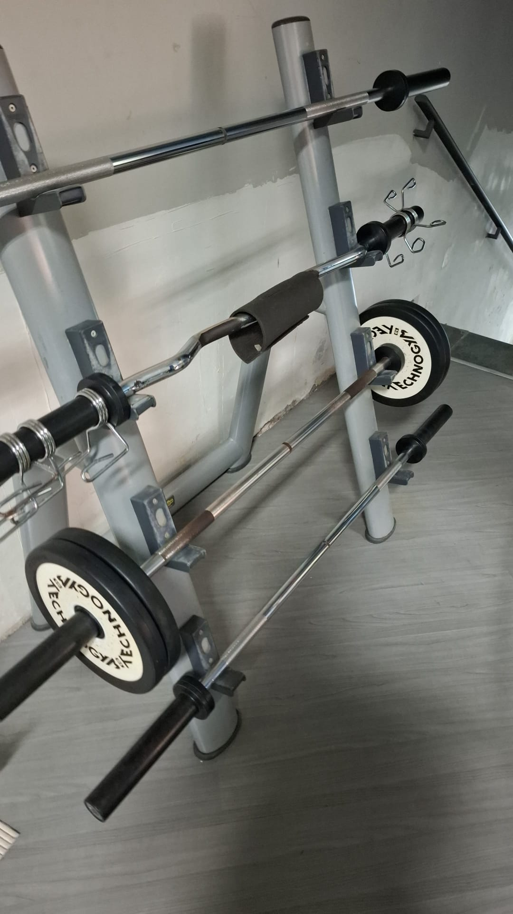
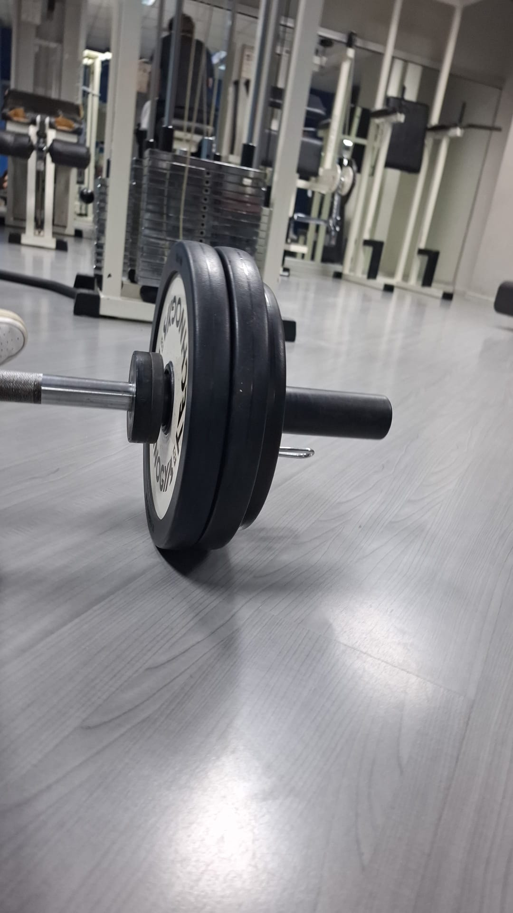

Nascondersi, poi osare
Prima dell'estate del 2022 non avevo mai indossato un top che lasciasse la pancia scoperta per uscire. Sono sempre stata più alta delle mie coetanee, e questo mi faceva sentire in difetto. Avevo confuso la statura con la grossezza, e per questo mi nascondevo. Sentivo che il mio corpo non si era ancora sviluppato nel modo "giusto", che dovevo cambiare qualcosa.
Una volta dimagrita, allora andrò bene. Solo allora sarò giusta.
Fu con questo presupposto che iniziai ad andare in palestra insieme a una mia amica. La sua compagnia fu determinante all'inizio: da sola non avrei mai avuto il coraggio di entrare. Mi sentivo osservata e giudicata in ogni momento. Col tempo, però, capii che a giudicarmi era soltanto la mia mente. Nessun altro.
Ben presto la compagnia cominciò a starmi stretta. Io e la mia amica avevamo fisicità ed esigenze diverse, e mentalità opposte: io volevo allenarmi più spesso, lei non era predisposta. Nonostante questo, per un periodo non riuscii ad andare da sola, la paura del giudizio era ancora troppo forte. Poi feci quel passo. Ne combinai di figuracce, ma da ognuna imparai qualcosa, e a un certo punto l'imbarazzo lasciò spazio alle risate per la mia stessa goffaggine.
La palestra divenne un posto sicuro, e la amai fin da subito: quelle ore di allenamento mi svuotavano la testa e mi facevano stare bene.


Risultati, e il prezzo della perfezione
Nell'estate dopo la fine del secondo anno di superiori la mia routine raggiunse la massima intensità. Andavo ad allenarmi ogni giorno, eccetto la domenica perché la palestra era chiusa. Cominciai anche a seguire un percorso con un nutrizionista, ed ero altrettanto disciplinata con l'alimentazione: non un grammo fuori posto. Quando uscivo, portavo il cibo da casa. Ero così concentrata sull'obiettivo che non sentivo nemmeno appetito se vedevo i miei amici mangiare del cibo spazzatura o dolci vari. Quelli me li concedevo nel fine settimana in mangiavo liberamente: due giorni non avrebbero compromesso i progressi.
I risultati arrivarono in fretta e furono visibili. Persi il grasso in eccesso e guadagnai massa magra. In quel periodo avevo gli addominali definiti anche con l'addome rilassato , una condizione che non ho più raggiunto da allora. Concluso il periodo di deficit, passai a una fase di surplus calorico, continuando a progredire.

Eppure, nonostante i risultati oggettivi, le insicurezze non erano svanite. La mia mentalità del volere sempre di più è sempre stata un'arma a doppio taglio. Da una parte mi spingeva al miglioramento continuo con costanza. Dall'altra, era come se niente di ciò che facessi fosse mai abbastanza.
Anche se il mondo fosse crollato, non avrei mai permesso che la mia disciplina con la palestra, la dieta e la scuola ne risentisse. Nei momenti difficili, salvavo quelle cose prima ancora di me stessa, finendo spesso per dimenticarmi di essere una persona .
Fino al punto in cui ho confuso la disciplina con l'ossessione.
L'entusiasmo iniziale sparì insieme alla positività. Allo specchio riuscivo a vedere soltanto i difetti che non potevo correggere, cancellando tutto ciò che avevo migliorato. Il cibo era diventato solo una fonte di nutrienti: cucinavo pasta e carne insipide, senza sale, senza olio, senza nemmeno la verdura. I pensieri intrusivi cominciarono a prevalere sulla pace interiore che l'allenamento mi aveva sempre trasmesso. Ma non mi fermai. Rimasi costante lo stesso.
Quando il corpo chiede di fermarsi
Quando arrivò il periodo delle vacanze estive ero esausta. Proprio come l'estate prima aumentai i giorni d'allenamento, ma ormai non ero più una principiante e cominciai ad approcciarmi ad esercizi più pesanti e complessi. Seguii con diligenza la scheda, ma arrivata agli sgoccioli per la partenza, saltai l'ultimo allenamento della settimana , una cosa al tempo impensabile per me che non transigevo su niente. Al ritorno, la visita di controllo dal nutrizionista rivelò che ero dimagrita ulteriormente: lui rimase sorpreso, dicendomi che ero l'unica ad essere tornata dalle vacanze in quelle condizioni. Era passata poco più di una settimana, ma il mio corpo era a pezzi. La mente, però, non lo ascoltò: ripresi ad allenarmi con la stessa intensità di prima.
I segnali fisici erano chiari e inequivocabili. Ero così affaticata da non riuscire nemmeno a spostare un bilanciere senza dovermi sedere. Sapevo che non ce la facevo, ma continuavo a presentarmi ogni giorno, perchè la mia rigidità non mi permetteva di mettere a rischio i progressi che avevo ottenuto con fatica. A peggiorare la situazione fu la decisione di autogestirmi: smisi di andare dal nutrizionista e interruppi anche l'assunzione degli integratori che prendevo. L'errore fu che lo feci troppo bruscamente. Pretendevo che il mio corpo performasse come prima delle vacanze senza dargli il tempo nè i mezzi per recuperare. Non ero disposta a fare un passo indietro.

Fu in quel periodo che cominciai ad avvertire delle extrasistoli . Ricordo la prima volta con precisione: stavo facendo degli affondi bulgari con il bilanciere, un esercizio che per me è sempre stato particolarmente impegnativo e stressante. Finita la serie, il cuore batteva forte , com'è normale dopo uno sforzo , ma a un certo punto sembrò interrompersi per un attimo, per poi ripartire. Una serie di battiti forti seguiti da uno debole. Mi spaventai moltissimo e tornai a casa, dove il fenomeno continuò.
Andai subito dal cardiologo. La visita e la prova da sforzo non mostrarono nulla di preoccupante. Il medico mi disse che se fosse ricapitato avrei potuto fare un holter. Quella stessa sera, però, tornai in palestra. Per combattere la stanchezza avevo preso un energy drink. Feci lo stesso identico esercizio e le extrasistoli si ripresentarono. Provai a continuare con esercizi più leggeri, ma alla fine me ne andai.
Insistetti per fare l'holter, perché la situazione mi spaventava. Ero così suggestionata da immaginarmi dolori che non esistevano. Anche l'holter non rilevò nulla. Il medico mi disse solo di stare calma. Con fatica, riuscii a smettere di pensarci, e da allora non ho più avvertito niente di strano.
Mollare, per la prima volta
Riprendere fu lento e difficile. Tornavo in palestra, facevo due esercizi e dovevo andarmene perché mi sentivo male. Il solo guardare una scheda di allenamento della portata di quelle che facevo prima mi provocava nausea. A dire il vero, in quel periodo ero spesso disturbata di stomaco e avvertivo un malessere fisico generale. Per questo decisi di tornare dal nutrizionista, convinta che se avessi ripreso ad assumere gli integratori e seguire una dieta specifica, allora mi sarei rimessa in forze. Inizialmente andò bene, proprio come prima. Poi arrivò un'altra ricaduta, in cui non riuscivo a seguire più nulla.
Per la prima volta in vita mia, ho davvero mollato. Ho accettato di non avere la forza per continuare.
Non è stato semplice: era il primo pensiero al mattino e l'ultimo alla sera. A ogni risveglio mi promettevo che quello sarebbe stato l'ultimo giorno così. Ho cominciato a procrastinare. Proprio io, che l'avevo sempre disprezzato. Inoltre, la mia mente si stava ammorbidendo e questo mi faceva sentire volubile e pigra. Mi ritrovavo a confrontarmi con la me del passato, convinta che lei sarebbe stata più ferma nelle sue decisioni e nei suoi doveri.
È doloroso accettare di essere cambiati, soprattutto quando ci si rende conto solo dopo di quanto si valeva .
Anche se rimpiango quella versione di me, non la idealizzo. Trasformavo ogni cosa , anche i miei hobby , in prove da superare per riaffermare il mio valore come persona. Magari ero ancora più efficiente , ma mai soddisfatta.
Quello che la palestra mi ha davvero dato
Spesso dico che voglio tornare come ero prima, ma la verità è che la me di allora e quella di oggi non sono due persone separate. Sono sempre la stessa persona che sta crescendo.
La palestra mi ha accompagnata in questa crescita in modi che non avrei immaginato. Sono sempre stata timida e riservata, ma in quell'ambiente ho imparato ad avere a che fare con gli altri, a guardarli negli occhi e a sostenerne lo sguardo. Ho superato quel disagio che mi spingeva a sentirmi sempre giudicata, quello stesso disagio che un tempo non mi avrebbe mai permesso di uscire da sola. Oggi invece sono completamente a mio agio. Se mi va di fare qualcosa non mi faccio più limitare dalla compagnia. Mi sento sempre più indipendente e sempre più me stessa.
Ho capito che il mio valore non dipende da quello che faccio, ma da chi sono.
Sul fronte pratico, la palestra ha contribuito a forgiare la mia organizzazione e produttività. Dopo ogni sessione mi sentivo molto più concentrata per lo studio. La necessità di seguire un piano alimentare mi ha portata a cucinare da sola per la prima volta, ormai due anni fa, scoprendo una passione e prendendo un'abitudine importante che mi ha reso ancora più autonoma. Tra esperimenti riusciti e qualche piatto quasi immangiabile, mi diverto, mi sento spensierata. Quella leggerezza è uno dei regali più belli di questo percorso.
La palestra mi ha insegnato anche a osservare le parti sbagliate della mia mentalità e a lavorarci. Ho imparato che a volte bisogna rallentare, o addirittura fermarsi del tutto. Dare tempo al corpo e alla mente di riprendersi non è una perdita di tempo nè tantomeno pigrizia, ma intelligenza e cura di se. Andare di fretta può farti perdere ancora più tempo, o peggio, farti del male.
Ed è esattamente quello che ho fatto: ho rallentato. Ho ridotto l'intensità degli allenamenti, ho smesso gradualmente di prendere gli integratori e ho adattato il piano alimentare alle mie esigenze reali. Per ora sono in una fase di stallo, ma va bene così. In futuro, forse, riprenderò da dove mi ero fermata. Per adesso mi alleno perché mi piace e per restare in movimento, cercando di conservare uno stile di vita sano.
Quanto all'immagine che vedo allo specchio: non so se la mia pancia fosse davvero come la percepivo, né se sia mai cambiata davvero. So solo che ora non mi sembra più qualcosa di cui vergognarsi o da nascondere. La dismorfia corporea è molto comune, l'importante è esserne consapevoli. E migliorarsi in modo sano, partendo dall'accettazione di sé, non può che fare bene.
Ma la consapevolezza più grande che ho raggiunto è questa:
Sono innanzitutto un essere umano, e poi tutto il resto.